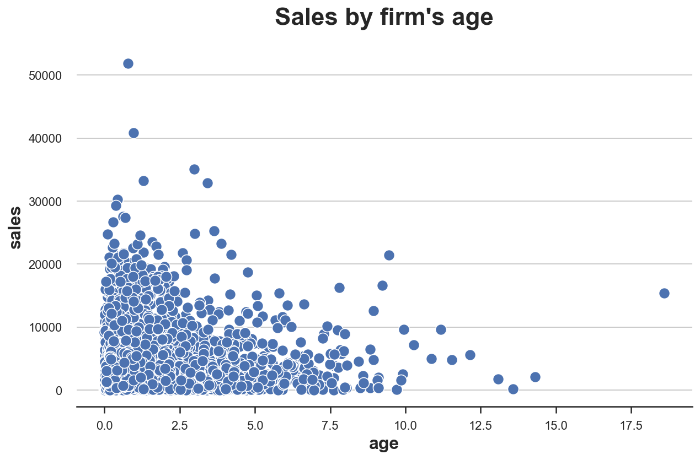
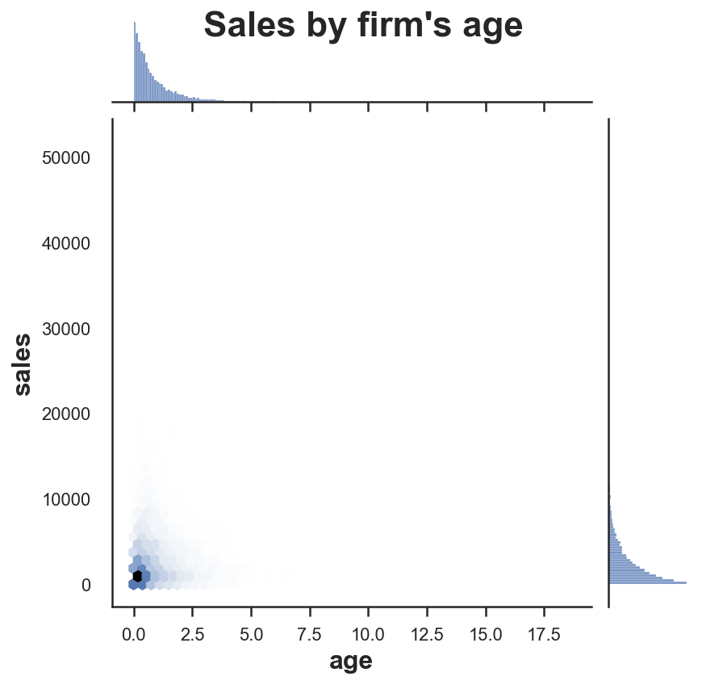
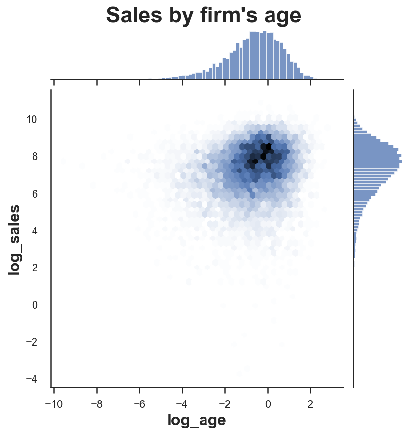
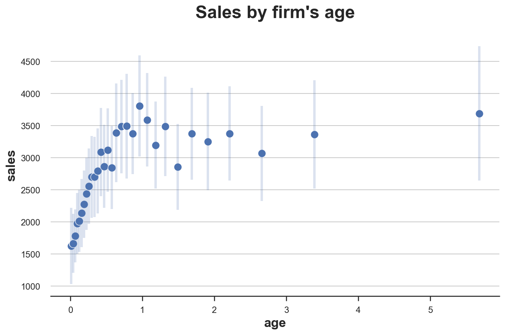
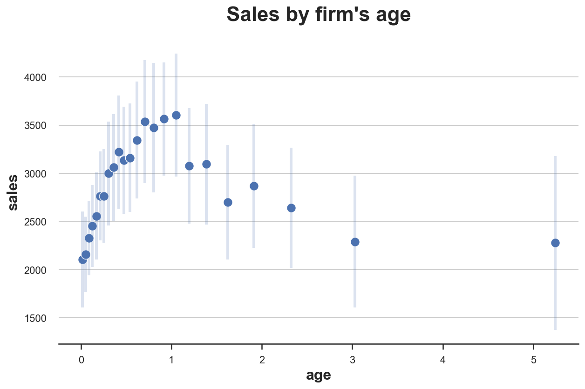
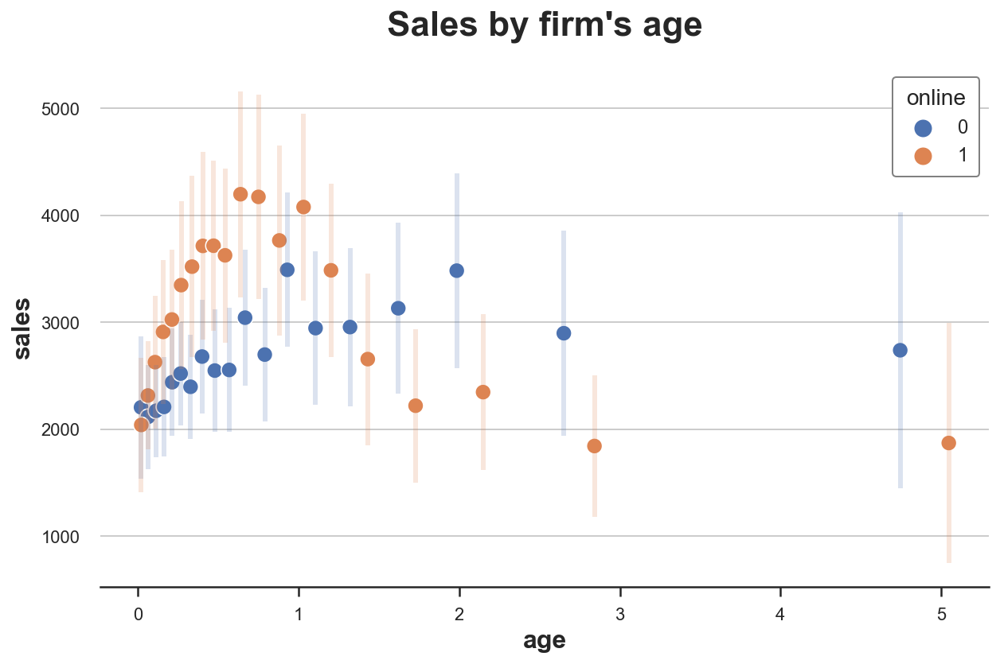

Goodbye Scatterplot, Welcome Binned Scatterplot

When we want to visualize the relationship between two continuous variables, the go-to plot is the scatterplot. It’s a very intuitive visualization tool that allows us to directly look at the data. However, when we have a lot of data and/or when the data is skewed, scatterplots can be too noisy to be informative.
In this blog post, I am going to review a very powerful alternative to the scatterplot to visualize correlations between two variables: the binned scatterplot. Binned scatterplots are not only a great visualization tool, but they can also be used to do inference on the conditional distribution of the dependent variable.
The Scatterplot
Let’s start with an example. Suppose we are an online marketplace where multiple firms offer goods that consumer can efficiently browse, compare and buy. Our dataset consists in a snapshot of the firms active on the marketplace.
Let’s load the data and have a look at it. You can find the code for the data generating process here.
%matplotlib inline
%config InlineBackend.figure_format = 'retina'
from src.utils import *
from src.dgp import dgp_marketplace
df = dgp_marketplace().generate_data(N=10_000)
df.head()
| age | sales | online | products | |
|---|---|---|---|---|
| 0 | 0.312777 | 450.858091 | 0 | 2 |
| 1 | 1.176221 | 1121.882449 | 1 | 3 |
| 2 | 1.764048 | 2698.714549 | 0 | 1 |
| 3 | 1.082742 | 1627.746386 | 0 | 3 |
| 4 | 3.156503 | 1464.593939 | 0 | 2 |
We have information on 10.000 firms. For each firm we know:
age: the age of the firmsales: the monthly sales from last monthonline: whether the firm is only active onlineproducts: the number of products that the firm offers
Suppose we are interested in understanding the relationship between age and sales. What is the life-cycle of sales?
Let’s start with a simple scatterplot of sales over age.
sns.scatterplot(x='age', y='sales', data=df);
plt.title("Sales by firm's age");

The plot is extremely noisy. We have a lot of observations, therefore, it is very difficult to visualize them all. If we had to guess, we could say that the relationship looks negative (sales decrease with age), but it would be a very uninformed guess.
We are now going to explore some plausible tweaks and alternatives.
Scatterplot Alternatives
What can we do when we have an extremely dense scatterplot? One solution could be to plot the density of the observations, instead of the observations themselves.
There are multiple solutions in Python to visualize the density of a 2-dimensional distribution. A very useful one is seaborn jointplot. jointplot plots the joint distribution of two variables, together with the marginal distributions along the axis. The default option is the scatterplot, but one can also choose to add a regression line (reg), change the plot to a histogram (hist), a hexplot (hex), or a kernel density estimate (kde).
Let’s try the hexplot, which is basically a histogram of the data, where the bins are hexagons, in the 2-dimensional space.
s = sns.jointplot(x='age', y='sales', data=df, kind='hex', );
s.ax_joint.grid(False);
s.ax_marg_y.grid(False);
s.fig.suptitle("Sales by firm's age");

Not much has changed. It looks like the distributions of age and sales are both very skewed and, therefore, most of the action is concentrated in a very small subspace.
Maybe we could remove outliers and zoom-in on the area where most of the data is located. Let’s zoom-in on the bottom-left corner, on observations what have age < 3 and sales < 3000.
s = sns.jointplot(x='age', y='sales', data=df.query("age < 3 & sales < 3000"), kind="hex");
s.ax_joint.grid(False);
s.ax_marg_y.grid(False);
s.fig.suptitle("Sales by firm's age");
Now there is much less empty space, but it does not look like we are going far. The joint distribution is still too skewed. This is the case when the data follows some power distribution, as it’s often the case with business data.
One solution is to transform the variable, by taking the natural logarithm.
df['log_age'] = np.log(df['age'])
df['log_sales'] = np.log(df['sales'])
We can now plot the relationship between the logarithms of age and sales.
s = sns.jointplot(x='log_age', y='log_sales', data=df, kind='hex');
s.ax_joint.grid(False);
s.ax_marg_y.grid(False);
s.fig.suptitle("Sales by firm's age", y=1.02);

The logarithm definitely helped. Now the data is more spread across space, which means that the visualization is more informative. Moreover, it looks like there is no relationship between the two variables.
However, there is still too much noise. Maybe data visualization alone is not sufficient do draw a conclusion.
Let’s swap to a more structured approach: linear regression. Let’s linearly regress log_sales on log_age.
smf.ols('log_sales ~ log_age', df).fit().summary().tables[1]
| coef | std err | t | P>|t| | [0.025 | 0.975] | |
|---|---|---|---|---|---|---|
| Intercept | 7.3971 | 0.015 | 478.948 | 0.000 | 7.367 | 7.427 |
| log_age | 0.1690 | 0.010 | 16.888 | 0.000 | 0.149 | 0.189 |
The regression coefficient for log_age is positive and statistically significant (i.e. different from zero). It seems that all previous visualizations were very misleading. From none of the graphs above we could have guessed such a strong positive relationship.
However, maybe this relationship is different for online-only firms and the rest of the sample. We need to control for this variable in order to avoid Simpson’s Paradox and, more generally, bias.
With linear regression, we can condition the analysis on covariates. Let’s add the binary indicator for online-only firms and the variable counting the number of products to the regression.
smf.ols('log_sales ~ log_age + online + products', df).fit().summary().tables[1]
| coef | std err | t | P>|t| | [0.025 | 0.975] | |
|---|---|---|---|---|---|---|
| Intercept | 6.5717 | 0.037 | 176.893 | 0.000 | 6.499 | 6.644 |
| log_age | 0.0807 | 0.010 | 7.782 | 0.000 | 0.060 | 0.101 |
| online | 0.1447 | 0.027 | 5.433 | 0.000 | 0.092 | 0.197 |
| products | 0.3456 | 0.014 | 24.110 | 0.000 | 0.317 | 0.374 |
The coefficient for log_age is still positive and statistically significant, but its magnitude has halved.
What should we conclude? It seems that sales increase over age, on average. However, this pattern might be very non-linear.
Within the linear regression framework, one approach could be to add extra terms such as polynomials (age^2) or categorical features (e.g. age < 2). However, it would be really cool if there was a more flexible (i.e. non-parametric) approach that could inform us on the relationship between firm age and sales.
If only…
The Binned Scatterplot
The binned scatterplot is a very powerful tool that provides a flexible and parsimonious way of visualizing and summarizing conditional means (and not only) in large datasets.
The idea behind the binned scatterplot is to divide the conditioning variable, age in our example, into equally sized bins or quantiles, and then plot the conditional mean of the dependent variable, sales in our example, within each bin.
Details
Cattaneo, Crump, Farrell, Feng (2021) have built an extremely good package for binned scatterplots in R, binsreg. Moreover, they have ported the package to Python. We can install binsreg directly from pip using pip install binsreg. You can find more information on the Python package here, while the original and detailed R package documentation can be found here.
The most important choice when building a binned scatterplot is the number of bins. The trade-off is the usual bias-variance trade-off. By picking a higher number of bins, we have more points in the graph. In the extreme, we end up having a standard scatterplot (assuming the conditioning variable is continuous). On the other hand, by decreasing the number bins, the plot will be more stable. However, in the extreme, we will have a single point representing the sample mean.
Cattaneo, Crump, Farrell, Feng (2021) prove that, in the basic binned scatterplot, the number of bins that minimizes the mean squared error is proportional to $n^{1/3}$, where $n$ is the number of observations. Therefore, in general, more observations lead to more bins.
Starr and Goldfarb (2020) add the following consideration:
“However other elements are also important. For example, holding the distribution of x constant, the more curvilinear the true relationship between x and y is, the more bins the algorithm will select (otherwise mean squared error will increase). This implies that even with large n, few bins will be chosen for relatively flat relationships. The calculation of the optimal number of bins in a basic binned scatterplot thus takes into account the amount and location of variation in the data available to identify the relationship between x and y.”
It is strongly recommended to use the default optimal number of bins. However, one can also set a customized number of bins in binsreg with the nbins option.
Binned scatterplots however, do not just compute conditional means, for optimally chosen intervals, but they can also provide inference for these means. In particular, we can build confidence intervals around each data point. In the binsreg package, the option ci adds confidence intervals to the estimation results. The option takes as input a tuple of parameters (p, s) and uses a piecewise polynomial of degree p with s smoothness constraints to construct the confidence intervals. By default, the confidence intervals are not included in the plot. For what concerns the choice of p and s, the package documentation reports:
“Recommended specification is ci=c(3,3), which adds confidence intervals based on cubic B-spline estimate of the regression function of interest to the binned scatter plot.”
Binsreg
One problem with the Python version of the package, is that is not very Python-ish. Therefore, I have wrapped the binsreg package into a function binscatter that takes care of cleaning and formatting the output in a nicely readable Pandas DataFrame.
import binsreg
def binscatter(**kwargs):
# Estimate binsreg
est = binsreg.binsreg(**kwargs)
# Retrieve estimates
df_est = pd.concat([d.dots for d in est.data_plot])
df_est = df_est.rename(columns={'x': kwargs.get("x"), 'fit': kwargs.get("y")})
# Add confidence intervals
if "ci" in kwargs:
df_est = pd.merge(df_est, pd.concat([d.ci for d in est.data_plot]))
df_est = df_est.drop(columns=['x'])
df_est['ci'] = df_est['ci_r'] - df_est['ci_l']
# Rename groups
if "by" in kwargs:
df_est['group'] = df_est['group'].astype(df[kwargs.get("by")].dtype)
df_est = df_est.rename(columns={'group': kwargs.get("by")})
return df_est
We can now proceed to estimate and visualize the binned scatterplot for age based on sales.
# Estimate binsreg
df_est = binscatter(x='age', y='sales', data=df, ci=(3,3))
df_est.head()
| group | age | bin | isknot | mid | sales | ci_l | ci_r | ci | |
|---|---|---|---|---|---|---|---|---|---|
| 0 | Full Sample | 0.012556 | 0 | 0 | 0 | 1624.779616 | 1312.439124 | 1905.535412 | 593.096288 |
| 1 | Full Sample | 0.037015 | 1 | 0 | 0 | 1664.078013 | 1435.438411 | 1893.888819 | 458.450408 |
| 2 | Full Sample | 0.065813 | 2 | 0 | 0 | 1779.657894 | 1555.909281 | 1968.681960 | 412.772679 |
| 3 | Full Sample | 0.094486 | 3 | 0 | 0 | 1976.464837 | 1740.530049 | 2216.800005 | 476.269956 |
| 4 | Full Sample | 0.125363 | 4 | 0 | 0 | 2015.833752 | 1796.489393 | 2280.237320 | 483.747927 |
The binscatter function outputs a dataset in which, for each bin of the conditioning variable, age, we have values and confidence intervals for the outcome variable, sales.
We can now plot the estimates.
# Plot binned scatterplot
sns.scatterplot(x='age', y='sales', data=df_est);
plt.errorbar('age', 'sales', yerr='ci', data=df_est, ls='', lw=3, alpha=0.2);
plt.title("Sales by firm's age");

The plot is quite revealing. Now the relationship looks extremely non-linear with a sharp increase in sales at the beginning of the lifetime of a firm, followed by a plateau.
Moreover, the plot is also telling us information regarding the distributions of age and sales. In fact, the plot is more dense on the left, where the distribution of age is concentrated. Also, confidence intervals are tighter on the left, where most of the conditional distribution of sales lies.
As we already discussed in the previous section, it might be important to control for other variables. For example, the number of products, since firms that sell more products probably survive longer in the markets and also make more sales.
binsreg allows to condition the analysis on any number of variables, with the w option.
# Estimate binsreg
df_est = binscatter(x='age', y='sales', w=['products'], data=df, ci=(3,3))
# Plot binned scatterplot
sns.scatterplot(x='age', y='sales', data=df_est);
plt.errorbar('age', 'sales', yerr='ci', data=df_est, ls='', lw=3, alpha=0.2);
plt.title("Sales by firm's age");

Conditional on number of products, the shape of the sales life-cycle changes further. Now, after an initial increase in sales, we observe a gradual decrease over time.
Do online-only firms have different sales life-cycles with respect to mixed online-offline firms? We can produce different binned scatterplots by group using the option by.
# Estimate binsreg
df_est = binscatter(x='age', y='sales', by='online', w=['products'], data=df, ci=(3,3))
# Plot binned scatterplot
sns.scatterplot(x='age', y='sales', data=df_est, hue='online');
plt.errorbar('age', 'sales', yerr='ci', data=df_est.query("online==0"), ls='', lw=3, alpha=0.2);
plt.errorbar('age', 'sales', yerr='ci', data=df_est.query("online==1"), ls='', lw=3, alpha=0.2);
plt.title("Sales by firm's age");

From the binned scatterplot, we can see that online products have on average shorter lifetimes, with a higher initial peak in sales, followed by a sharper decline.
Conclusion
In this blog post, we have analyzed a very powerful data visualization tool: the binned scatterplot. In particular, we have seen how to use the binsreg package to automatically pick the optimal number of bins and perform non-parametric inference on conditional means. However, the binsreg package offers much more than that and I strongly recommend checking its manual more in depth.
References
[1] E Starr, B Goldfarb, Binned Scatterplots: A Simple Tool to Make Research Easier and Better (2020), Strategic Management Journal.
[2] M. D. Cattaneo, R. K. Crump, M. H. Farrell, Y. Feng, On Binscatter (2021), working paper.
[3] P. Goldsmith-Pinkham, Lecture 6. Linear Regression II: Semiparametrics and Visualization, Applied Metrics PhD Course.
I hold a PhD in economics from the University of Zurich. Now I work at the intersection of economics, data science and statistics. I regularly write about causal inference on Medium.